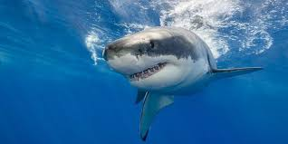

Maravillas del Reino Animal
Los animales son seres vivos que habitan en diversos ecosistemas del planeta y
se caracterizan por su capacidad de moverse, alimentarse y adaptarse al entorno.
Entre ellos destacan especies imponentes como el oso, conocido por su fuerza y
hábitos solitarios; el león, símbolo de poder y liderazgo en las sabanas africanas;
y el tiburón, un depredador marino que domina los océanos con su aguda percepción
y velocidad. Cada uno representa la diversidad y maravilla del reino animal.
Oso

El oso es un mamífero de gran tamaño, conocido por su pelaje denso y su dieta omnívora.
Habita en bosques, montañas y regiones polares, siendo el oso pardo y el oso polar los más conocidos.
Su fuerza es legendaria, capaz de derribar árboles y cazar presas grandes.
A pesar de su apariencia feroz, muchos osos son solitarios y pasan gran parte del tiempo buscando alimento.
Información relevante del oso:
- Peso:100–600 kg (puede superar los 700 kg).
- Longitud:1.8–3 metros.
- Fuente de alimentación:Omnívoro: peces (como salmón), frutas, raíces, pequeños mamíferos.
- Esperanda de vida:20–30 años (en libertad).
León

El león es conocido como el "rey de la selva", aunque su hábitat natural son las sabanas africanas.
Es un gran felino social, viviendo en manadas lideradas por un macho dominante.
Su melena distintiva no solo es un símbolo de poder, sino que también protege su cuello en peleas.
Los leones son cazadores eficientes, trabajando en equipo para derribar presas grandes como cebras y búfalos.
Información relevante del león:
- Peso:120–250 kg (machos).
- Longitud:1.7–2.5 metros (sin contar la cola).
- Fuente de alimentación:Carnívoro: antílopes, cebras, búfalos.
- Esperanda de vida:10–14 años (en libertad), hasta 20 en cautiverio.
Tiburón

El tiburón es un depredador marino que ha existido durante más de 400 millones de años.
Conocido por su aguda percepción y velocidad, es un cazador eficiente en los océanos.
Existen más de 500 especies de tiburones, desde el pequeño tiburón linterna hasta el enorme tiburón ballena.
Su piel está cubierta de escamas diminutas que les permiten nadar con facilidad.
Información relevante del tiburón:
- Peso:500–1,300 kg.
- Longitud: 4–6 metros.
- Fuente de alimentación:Carnívoro: peces, focas, calamares, otros tiburones.
- Esperanda de vida:30–70 años (varía por especie).